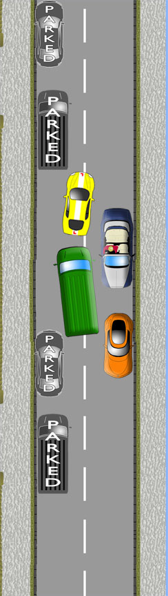

The green van should
have
seen the oncoming
traffic and
small gap and
held back in an
earlier
waiting position.
Poor
planning and awareness!
Using good awareness,
the
yellow car can move
carefully
forward to allow
the van into
the gap.
